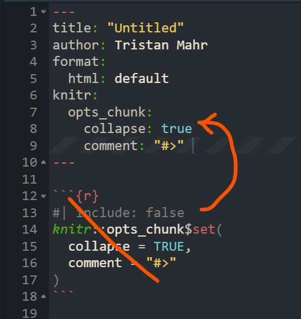
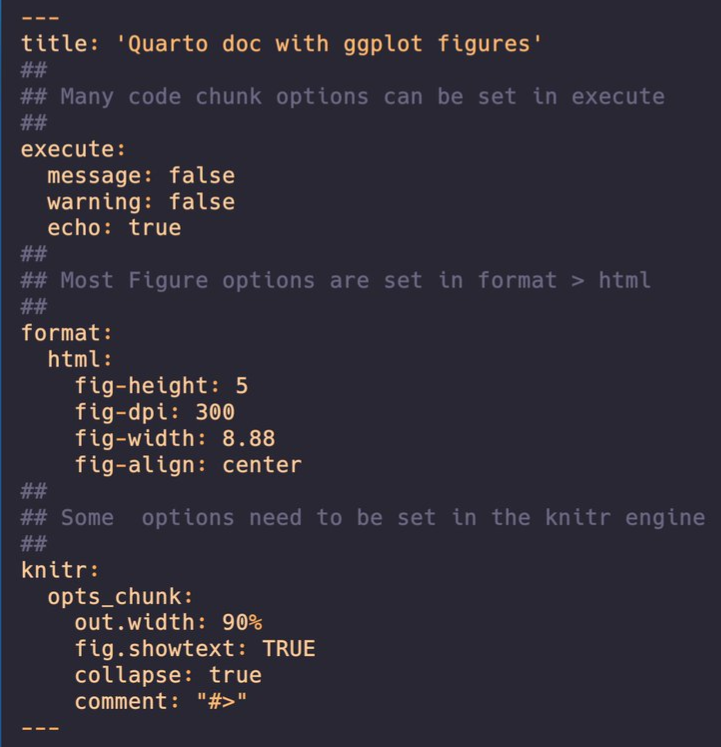
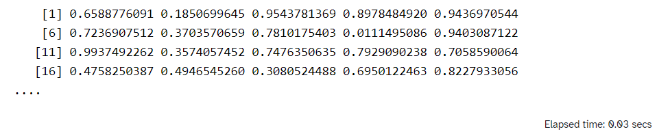
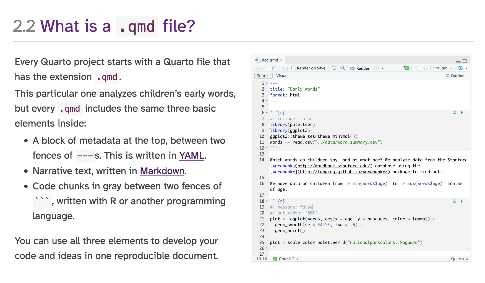

Quarto
Misc
Packages
- {quarto}
Resources
- Docs
- Reference
- Troubleshooting
- Sass Variables
- HTML
- RevealJS
- Dashboard
- Default values for all Bootstrap Sass variables
quarto --version- Must be in RStudio Terminalquarto check- Must be in RStudio Terminal - versions and engine checks$ quarto check [>] Checking versions of quarto binary dependencies... Pandoc version 3.1.1: OK Dart Sass version 1.55.0: OK [>] Checking versions of quarto dependencies......OK [>] Checking Quarto installation......OK Version: 1.3.340 Path: C:\Users\tbats\AppData\Local\Programs\Quarto\bin CodePage: 1252 [>] Checking basic markdown render....OK [>] Checking Python 3 installation....OK Version: 3.8.1 (Conda) Path: C:/Users/tbats/Miniconda3/python.exe Jupyter: 4.9.1 Kernels: python3 (\) Checking Jupyter engine render....2023-04-28 10:18:15,018 - traitlets - WARNING - Kernel Provisioning: The 'local-provisioner' is not found. This is likely due to the presence of multiple jupyter_client distributions and a previous distribution is being used as the source for entrypoints - which does not include 'local-provisioner'. That distribution should be removed such that only the version-appropriate distribution remains (version >= 7). Until then, a 'local-provisioner' entrypoint will be automatically constructed and used. The candidate distribution locations are: ['C:\\Users\\tbats\\Miniconda3\\lib\\site-packages\\jupyter_client-5.3.4.dist-info', 'C:\\Users\\tbats\\Miniconda3\\lib\\site-packages\\jupyter_client-7.0.6.dist-info'] [>] Checking Jupyter engine render....OK [>] Checking R installation...........OK Version: 4.2.3 Path: C:/PROGRA~1/R/R-42~1.3 LibPaths: - C:/Users/tbats/AppData/Local/R/win-library/4.2 - C:/Program Files/R/R-4.2.3/library knitr: 1.42 rmarkdown: 2.20 [>] Checking Knitr engine render......OKCLI
quarto renderto compile a documentquarto previewto render a live preview that automatically updates when the source files are saved
Using a development verison of Quarto
- First Usage
Change directories to where you want to store the dev version
Clone repo and change to the cloned directory
git clone https://github.com/quarto-dev/quarto-cli cd quarto-cliDisable Anti-Virus
Run Configuration Script
Windows Command Prompt
cmd /k configure.cmd\kkeeps the window open in case it errors
Powershell
Invoke-Item configure.cmdLinux/MacOS
./configure.shThis will take a minute or two as it checks versions, installs dependencies like pandoc, etc.
Add path to quarto.cmd to PATH
- After the configuration file runs, it will output the path you need to put on PATH, e.g.
"C:\Users\erc\Documents\Quarto\quarto-cli\package\dist\bin"
- After the configuration file runs, it will output the path you need to put on PATH, e.g.
Enable Anti-Virus
Should be able to use in RStudio
- I was not able to use the RStudio terminal for quarto commands (e.g.
quarto check) though. - To find the version, I just opened powershell and ran
quarto –versionjust to make sure it was running and on PATH.- Not sure if they use this every time but it was 99.9.9 instead of the verion in the changelog.
- I also rendered a qmd file using
quarto-cmdfrom the root directory of quarto-cli to see if it matched the output from RStudio. (cd qmdthenquarto preview forecasting-statistical.qmd --to html --no-watch-inputs --no-browse)
- I was not able to use the RStudio terminal for quarto commands (e.g.
- Subsequent Development Versions
- Change directory to quarto-cli and
git pull
- Change directory to quarto-cli and
- First Usage
Shortcuts
- New R chunk: ctrl + alt + i
- Build whole book: ctrl+shift b
- Render page and preview book: ctrl+shift k
Using yaml style for chunk options
.jpg)
Convert Rmd chunk options to Quarto:
knitr::convert_chunk_header("doc.rmd", "doc.qmd")Anchor Link - A link, which allows the users to flow through a website page. It helps to scroll and skim-read easily. A named anchor can be used to link to a different part of the same page (like quickly navigating) or to a specific section of another page.
- This is the “#sec-moose” id that can be added to headers which it allows to be referenced within the document or in other documents.
MathJax commands
- Font Size:
\tiny{ }, \scriptsize{ }, \small{ }, \normal{ }, \large{ }, \Large{ }, \LARGE{ }, \huge{ }, \Huge{ }
- Font Size:
Lightbox
- Docs
- Grouping images for lightbox carousel:
{group="my-gallery"}
Foldable (non-executable) Code Blocks
HTML Tags
 <details> <summary>Code: My non-executable code</summary> ``` r # code ``` </details>
Syntax
Inline code
- Total number of counties: **`{r} polling_places |> filter(state == "Alabama") |> distinct(county_name) |> count()`** - Total number of polling places: **`{r} polling_places |> filter(state == "Alabama") |> count()`** - Election Day: **`{r} polling_places |> filter(state == "Alabama") |> pull(election_date) |> unique()`**To escape backticks in inline code, you have to use double-backticks instead of single backticks
Example: To get
"`"\$(\$file.FullName)`""`` "`"\$(\$file.FullName)`"" ``
Align code chunk under bullet and add indented comment below chunk
- [Example]{.ribbon-highlight} (using a SQL Query; method 1) ``` r # open dataset ds <- arrow::open_dataset(dir_out, partitioning = "species") # open connection to DuckDB con <- dbConnect(duckdb::duckdb()) # register the dataset as a DuckDB table, and give it a name duckdb::duckdb_register_arrow(con, "my_table", ds) # query dbGetQuery(con, " SELECT sepal_length, COUNT(*) AS n FROM my_table WHERE species = 'species=setosa' GROUP BY sepal_length ") # clean up duckdb_unregister(con, "my_table") dbDisconnect(con) ``` - filtering using a partition, the WHERE format is '\<partition_variable\>=\<partition_value\>'- Space between bullet and top ticks
- Space between bottom ticks and bullet
- Note alignment of text
Add Code Annotations
- [Partition a large file and write to arrow format]{.underline} ``` r lrg_file <- open_dataset(<file_path>, format = "csv") # <1> lrg_file %>% group_by(var) %>% # <2> write_dataset(<output_dir>, format = "feather") # <3> ``` 1. Pass the file path to `open_dataset()` 2. Use `group_by()` to partition the Dataset into manageable chunks 3. Use `write_dataset()` to write each chunk to a separate Parquet file---all without needing to read the full CSV file into R - `open_dataset` is fast because it only reads the metadata of the file system to determine how it can construct queriesFootnote
words [^1] [^1]: Data from https://github.com/rfordatascience/tidytuesdayFor PDF output, you need pagebreaks:
{{< pagebreak >}}
YAML
Set global chunk options in yaml
For code cells
execute: echo: false message: false warning: false
Enable Margin Notes
--- # YAML front matter reference-location: margin ---!exprto render code within chunk options- e.g. figure caption:
#| fig-cap: !expr glue::glue("The mean temperature was {mean(airquality$Temp) |> round()}")
- e.g. figure caption:
column: screen-insetyaml markup is used to show a very wide tableIf you haven’t set your Quarto document to be
self-contained, then the images have also already been saved for you - probably in a folder calleddocumentname_files/figure-html/format: html: embed-resources: trueDate first published and date modified using the current date:
--- date: 2024-01-01 date-modified: today ---YAML Examples
- Example

- Example
{kind=link}
{kind=link}
Chunk Options
Graphics
Code Chunk
#| label: "fig-statemap" #| dpi: 300 #| fig.height: 7.2 #| fig.width: 3.6 #| dev: "png" #| echo: false #| warning: false #| message: false- Example shows settings for a graph for mobile
fig.heightandfig.widthare always given in inches
Reference Figure
1 See polling place locations in @fig-statemap.
Conditional Code Chunk Evaluation
Example: document output type
Set value in a code chunk
```{r setup} # Include in first chunk of .qmd # Get output file type out_type <- knitr::opts_knit$get("rmarkdown.pandoc.to") ```Use
!exprsytax to determine evaluation statusExample: eval chunk based on output type
```{r} #| eval: !expr out_type == "html" # code to create interactive {plotly} ``` ```{r} #| eval: !expr out_type == "docx" # code to create static {ggplot2} ```
Example: Use parameterization to set value
--- title: "test" format: html params: my_value: false ---- my_value can then be used throughout the document to determine chunk evaluation status
Knitr Hooks
- Notes from Writing knitr hooks
- Also has a knitr hook example that alters cell output (e.g. only prints 4 lines of a vector)
- Chunk Hooks
Chunk hooks get called twice: once before knitr executes the code in the chunk, and once again afterwards
The function can take up to four arguments, all of which are optional:
- before: A logical value indicating whether the function is being called before or after the code chunk is executed
- options: The list of chunk options
- envir: The environment in which the code chunk is executed
- name: The name of the code chunk option that triggered the hook function
The chunk hook is called for its side effects not the return value. However, if it returns a character output, knitr will add that output to the document output as-is.
Example: Chunk Timer
Code
create_timer_hook <- function() { start_time <- NULL function(before, options) { if (before) { start_time <<- Sys.time() } else { stop_time <- Sys.time() elapsed <- difftime(stop_time, start_time, units = "secs") paste( "<div style='font-size: 70%; text-align: right'>", "Elapsed time:", round(elapsed, 2), "secs", "</div>" ) } } } knitr::knit_hooks$set(timer = create_timer_hook())- The hook is triggered the first time (with
before = TRUE) to record the system time somewhere (e.g., in a variable called start_time). Then, when the hook is triggered the second time (withbefore = FALSE), it records the system time again (e.g., as stop_time), and computes the difference in time.
- The hook is triggered the first time (with
Use in a cell
```{r} #| timer: true runif(10000) ```Output

- Notes from Writing knitr hooks
{kind=link}
R and Python
If only R or R and Python, the notebook is rendered by {knitr}
If only Python, the notebook is rendered by jupyter
Set-up
- {reticulate} automatically comes loaded in Quarto and it knows to use it when it sees a python block, so you don’t need to load the package
- Quarto will select a version of Python using the Python Launcher on Windows or system
PATHon MacOS and Linux. You can override the version of Python used by Quarto by setting theQUARTO_PYTHONenvironment variable.- In CLI on Windows, type
pyis see which version the Python Launcher , and therefore Quarto, is using andpy –listto see which versions are installed.
- In CLI on Windows, type
R
```{r} #| label: read-data #| echo: true #| message: false #| cache: true lemurs <- readr::read_csv('https://raw.githubusercontent.com/rfordatascience/tidytuesday/master/data/2021/2021-08-24/lemur_data.csv') ```Python
```{python} #| label: modelling #| echo: true #| message: false lemur_data_py = r.lemur_data import statsmodels.api as sm y = lemur_data_py[["Weight"]] x = lemur_data_py[["Age"]] x = sm.add_constant(x) mod = sm.OLS(y, x).fit() lemur_data_py["Predicted"] = mod.predict(x) lemur_data_py["Residuals"] = mod.resid` ```- Use
r.to access the data in the R chunk - The first execution of a python cell starts
reticulate::repl_python()in the terminal
- Use
(back to) R
```{r} #| label: plotting #| echo: true #| output-location: slide #| message: false #| fig-align: center #| fig-alt: "Scatter plot of predicted and residual values for the fitted linear model." library(reticulate) library(ggplot2) lemur_residuals <- py$lemur_data_py ggplot(data = lemur_residuals, aes(x = Predicted, y = Residuals)) + geom_point(colour = "#2F4F4F") + geom_hline(yintercept = 0, colour = "red") + theme(panel.background = element_rect(fill = "#eaf2f2", colour = "#eaf2f2"), plot.background = element_rect(fill = "#eaf2f2", colour = "#eaf2f2")) ```- Use
py$to access the data in the Python chunk * - Must call
library(reticulate)in order for Quarto to recognizepy$
- Use
Layouts
2 cols (1 col: text, 1 col: image)
::: {layout="[50,50]"} ::: column Every Quarto project starts with a Quarto file that has the extension `.qmd`. This particular one analyzes children's early words, but every `.qmd` includes the same three basic elements inside: - A block of metadata at the top, between two fences of `---`s. This is written in [YAML](https://learnxinyminutes.com/docs/yaml/). - Narrative text, written in [Markdown](https://commonmark.org/help/tutorial/). - Code chunks in gray between two fences of ```` ``` ````, written with R or another programming language. You can use all three elements to develop your code and ideas in one reproducible document. :::  :::2 figures, 2 columns (i.e. side-by-side) with captions at the top
--- fig-cap-location: top --- - Words - Predictions of Standard RF vs Oblique RF ::: {layout-ncol="2"} {fig-align="left" width="432"} {fig-align="left" width="432"} ::: - Words- fig-cap-location: bottom is default;
- fig-cap-location: margin is buggy, at least in for project type book. Captions are added to the margins but bullet points mysteriously disappear during rendering to html
2 charts side-by-side extending past body margins
```{r} #| label: my-figure #| layout-ncol: 2 #| column: page ggplot() + ... ggplot() + ... ```- “layout-ncol” says 2 side-by-side columns
- “column: page” says extend column width to the width of the page
Tabs
- Stuff - More Stuff ::: panel-tabset ## tab title 1 ``` r # code ``` ## tab title 2 words ``` r # other code ``` - Thoughts ::: - StuffCallout Blocks
Resources
Example: Todo
::: {.callout-note collapse="true"} ## todo 1. Finish video - Currently working on: multinomial 2. Figure out exactly what $e$ is in the weight formula 3. Organize note 4. Transfer PS Matching section from econometrics-general :::Example: Caution
::: callout-caution This note is unfinished. I still have more to add, and the concepts need to be organized. :::
{kind=link}
{kind=link}
{kind=link}
Automation
- Iteration and Parameterization
Notes from
It involves having a “child” document as a template and running it repeatedly with different parameters
The “main” document includes the output from the child document
Rendering Options
CLI: e.g.
quarto render polling-places-report.qmd -P state:'California'{quarto}:
quarto::quarto_render( input = here::here("polling-places-report.qmd"), execute_params = list(state = "California") )
Example: Create a report for each parameter value. In each report, use the parameter value (e.g. state) to iterate through a template file that makes a tables (1 for each county) based on that value.
Main Report Document
--- title: "Polling Places Report - `r params$state`" params: state: "California" --- ```{r} #| results: hide library(dplyr) counties <- polling_places |> filter(state == params$state) |> distinct(county_name) |> pull() expanded_child <- counties |> purrr::map(\(county) { knitr::knit_expand("../_template.qmd", current_county = county)) }|> purrr::flatten() parsed_child <- knitr::knit_child(text = unlist(expanded_child)) ``` `{{r}} parsed_child`- The document that gets published, emailed, etc.
- params specified in YAML
- Value can also be used in the title of the document via inline R code
- Each county is iterated through the child document (_template.qmd) via current_county variable and
knit_expand - parsed_child is a list of the template file outputs.
- Then, parsed_child is converted to a character vector by
unlistand all the results are printed in the document by the inline R code
Child Document (i.e. Template)
### {{current_county}} COUNTY - Total Polling Places: `{r} polling_places |> filter(state == params$state, county_name == "{{current_county}}") |> count()` - Example Locations: ```{r} polling_places |> filter(state == params$state, county_name == "{{current_county}}") |> head(6) |> select(name, address.x) |> kbl(format = "markdown") ```- Parameter value is used to get county data and create tables for each.
- No YAML is necessary in child document
- params values are automatically available through
knitr::knit_expandthat’s executed in the Main document
- params values are automatically available through
- The county variable is utilized by the template file using the double curly braces,
{{current_county}} kbloutputs in markdown format so the table is correctly rendered in the Main document.
Rendering Script
polling_places <- readr::read_csv(here::here("data", "geocoded_polling_places.csv")) # create quarto::render arguments df polling_places_reports <- polling_places |> dplyr::distinct(state) |> dplyr::slice_head(n = 5) |> dplyr::mutate( output_format = "html", output_file = paste0(tolower(state), "-polling-places"), execute_params = purrr::map(state, \(state) list(state = state)) ) |> # default output is html, so that variable not selected dplyr::select(output_file, execute_params) # iterate through args and create reports purrr::pwalk( .l = polling_places_reports, .f = quarto::quarto_render, input = here::here("main_report_document.qmd"), .progress = TRUE )- Creates a report for each params value (e.g. state)
- Generates a dataframe for each set of arguments to be fed to
quarto::quarto_render.
Typst
Alternative to LaTeX for formatting pdfs
Notes from
Comparison with LaTeX
LaTeX
\usepackage{geometry} \usepackage{eso-pic} \usepackage{xcolor} \geometry{a4paper, total={170mm,257mm}, left=20mm, top=20mm, bottom=20mm, right=50mm} \definecolor{light}{HTML}{E6E6FA} \AddToShipoutPicture{% \AtPageLowerLeft{% \put(\LenToUnit{\dimexpr\paperwidth-3cm},0){% \color{light}\rule{3cm}{\LenToUnit\paperheight}}% }% }%Advantages
- You want to include equations (currently easier in LaTeX)
- (Currently) more flexibility with images and tables
Typst
set page( margin: (left: 2cm, right: 1.5cm, top: 2cm, bottom: 2cm), background: place(right + top, rect( fill: rgb("#E6E6FA"), height: 100%, width: 3cm, )) )Advantages
- Easier to learn
More informative error messages
No extra installations
Speed
Font
--- title: "My document" format: typst: mainfont: "Cascadia Code" ---Template
- Example
YAML
--- title: "My document" format: typst: template-partials: - typst-template.typ - typst-show.typ ---Show
#show: article.with( $if(title)$ title: "$title$", $endif$ )Template
#let article( // The document title. title: "Some title", // The document content. body ) = { // Set document metadata. set document(title: title) // Links should be purple. show link: set text(rgb("#800080")) // Title. text(weight: 800, upper(title))
- Example
Extensions
- Installing the extension downloads a .typ file with some styling
- Usage
Example: dept-news extension
--- title: "Chemistry Department" format: dept-news-typst: default ---
WebR
Set-Up
- Install the extension alongside your blog post by running
quarto add coatless/quarto-webr - Add the extension to your blog by adding
filters: ["webr"]to your post’s frontmatter - Instead of
{r}code chunks, use{webr-r}ones
- Install the extension alongside your blog post by running
Install CRAN packages on page load
filters: - "webr" webr: packages: - "dplyr" - "tidyr" - "purrr" - "tibble" - "crayon"- Add to frontmatter
Install R-Universe Package
```{webr-r} #| context: setup webr::install("collateral", repos = c("https://jimjam-slam.r-universe.dev")) ```- R-Universe packages must be installed in code cells